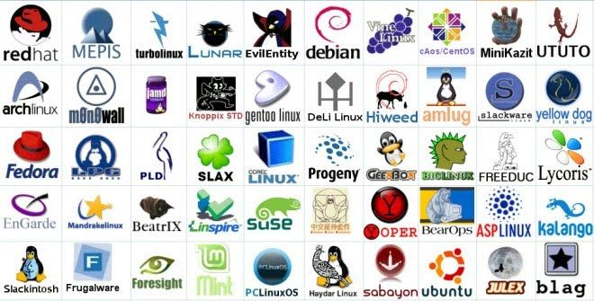

Servicio, Calidad y Compromiso
Nuestros servicios buscan enfocarse en hacer que el usuario contemple la
calidad y eficacia que tiene nuestro software para brindarles, con multiples
sistemas patentados podemos hacer que el usuarios puedan optimizar y agilizar sus
tiempos de produccion, contamos con un fuerte compromiso al momento de elaborar y testear
de manera rigurosa el software a contratar.
Sistemas Operativos
Si el usuario lo desea ya contamos con sistemas operativos propietarios y actualizados
de manera que pueda acoplarse a distintas ramas laborales, usuario puede optar por
usar un sistema como "Nobara" para un enfoque mas de estacion de trabajo
, asi reducir sus tiempos y mejorar la productividad, ya sea
renderizando un video, un plano 3D, editando fotos; o utilizar
un Software como "Steam Os" orientado a la performance en video juegos y
Streaming, ya que ambos sitemas operativos cuentan con el esquema de traduccion de datos W.I.N.E.
para poder emular aplicaciones de Windows y desarrollar aplicaciones para el sistema operativo,
asi mismo el cliente puede optar por contactarse con nosotros
en caso de requerir de una modificacion especial del sistema.

Algunos Sistemas desarrollados
Orsen Software
La empresa fue fundada por Lukas Brizuela y John carter un 8 de abril
de 1976 para desarrollar y comercializar intérpretes de BASIC para el
Altair 8800, un microordenador diseñado en 1974 y comercializando
software para el mercado emergente de las computadoras personales, en
1985 se comenzo con el desarrollo de un sistema operativo basado en
MS-DOS llamado "Venedic" y que continuo con la salida de "Multor" un
Sistema operativo con entorno grafico, su codigo fuente se fue
modificando hasta que en el año 1994 se fuciono con el kernel de linux
y salio al mercado "MultorV4" un sistema mejorado con capacidades de
entorno graficos increibles para la epoca, en el año 2008 se concreto
el proyeco W.I.N.E. (juego de palabras WINdows Emulator - Wine Is Not an Emulator)
el cual permitia traducir el codigo de algunas aplicaciones de windows para poder
emularlas en distribuciones de "Linux", comenzo como un codec de pago pero a dia de hoy es
gratuito,actualmente la empreza se encuentra desarrollando software y
actualizando sus mas recientes sistemas operativos, esto son "Nobara" (Lanzado en 2009) para
entornos de estaciones de trabajo o trabajos de oficina y el proyecto
colaboracion con Valve "Steam OS" (Lanzado en 2012) el cual fue desarrollado
para los Gamers que quieren sacarle toda la potencia a su Hardware.
 Miembros a cargo actuales
Miembros a cargo actuales
 Miembros Fundadores
Miembros Fundadores
La Fusion
Como ya sabrán, el kernel es el software que sirve de puente entre el
hardware y el resto de funciones del sistema operativo, que maneja el
sistema de ficheros, el acceso a la red y otras tareas de bajo nivel
que son críticas para el rendimiento, en este caso nuestro kernel es
la fusion entre Linux y Vicap, este ultimo utilizado y actualizado
hasta 1993 en MultorV3.5, al fusionarse con el kernel de linux el
resto de sistemas operativos realizados son de codigo semi abierto,
esto quiere decir que se pueden realizar modificaciones hasta cierto
punto de las librerias, el codigo fuente y el sector visual del
sistema operativo, todo esto gracias a las dependencias instalables de
linux y a la documentacion disponible de la fusion linux-Vicap.